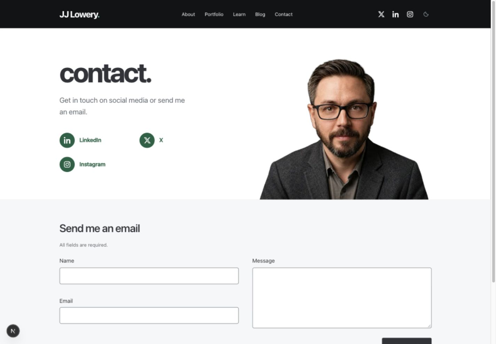
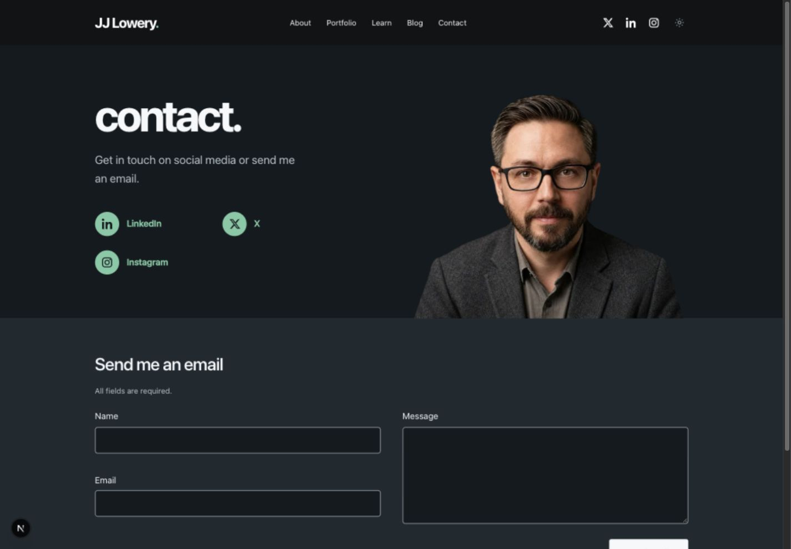

Green accent options
Three greens across JJ’s site, paired in light and dark. These are captured previews. The live site’s accent stays blue until you choose a direction.
Forest. Calm, grounded green. Light #236244 · Dark #7ECBA4 · Minimum checked contrast 6.75:1.
Light
Open full size
Dark
Open full size
Color applies to shared links, social icons, the brand period, hover and focus. Neutral buttons, typography, surfaces and project imagery retain the existing design. Form focus is available at every width; other views use desktop captures. Exact tokens and contrast pairs · Verification results